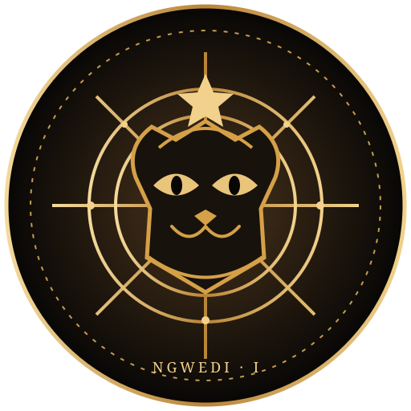

Ngwao & Ancestral Knowledge
Explore oral histories, community ethics, land-based knowledge and diverse African cultural traditions with context and respect.

HOUSE OF NGWEDIA universal house of consciousness, ancestral wisdom and holistic living. Rooted in African knowledge, open to the questions that connect humanity and the cosmos.
A living library for the study of consciousness, African traditions, ancient texts, cosmology and the human search for meaning.
Explore oral histories, community ethics, land-based knowledge and diverse African cultural traditions with context and respect.
Study the Akashic Records as an esoteric concept and spiritual framework, distinguishing belief and contemplative practice from scientific evidence.
Explore cuneiform writing, hymns, myths and surviving Mesopotamian texts while separating primary sources from later popular claims.
Explore astronomy, cosmic origins, philosophical inquiry and humanity's place in a vast universe.
Breath awareness, reflection, stillness and attention to everyday life.
Gentle movement, rhythm, dance and sound as forms of expression and community.
Land connection, ecological respect, seasonal awareness and time outdoors.
Education about rest, nourishment, relationships and emotional wellbeing. Not a substitute for qualified medical care.
The House is developing immersive experiences for consciousness, healing, identity, abundance, Ngwao and ancient wisdom.
Proposed for April 2027. Dates, venue, programme, pricing and registration are not yet confirmed. No payments or bookings are being accepted through this page.
Spoken-word circles, ancestral narratives and writing workshops.
Rhythm, dance, sound and community performances.
Earth-pigment workshops, craft and cosmology-inspired artwork.
Photography, short films, design and visual storytelling.
This form creates a text file on your device only. It does not send or store your information. An official receiving channel and privacy process must be configured before live enquiries are accepted.
A Botswana-rooted, globally minded space for consciousness, ancestral wisdom, holistic living and creative expression.
Social: TikTok · Ngwedi · TikTok · Paramount
Official email, telephone and physical address are pending confirmation.
Privacy notice · Ngwedi Sentinel security console